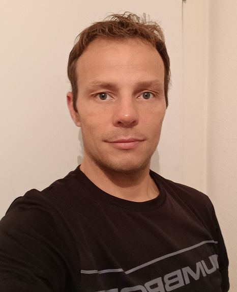

Djamel CHERCHARI

Bonjour,
Pendant vingt ans, j'ai effectué l'ensemble de mon parcours professionnel dans l'industrie.
A partir de 2021, j'ai souhaité faire une conversion professionnelle en tant que développeur web et web mobile pour élargir mes connaissances et pouvoir m'épanouir dans les métiers du WEB.
Je vous invite à prendre connaissance de mon CV que je pourrai vous commenter lors d'un prochain entretien.
A bientôt !
APTITUDES ET COMPETENCES
Compétences techniques
- Connaissance des techniques d'usinage et de fabrication
- Maîtrise des méthodes de contrôle dimensionnel : métrologie et contrôle 3D
- Programmation avec logiciel MSCOSMOS de MITUTOYO
- Maîtrise des techniques d'amélioration continue (méthodes de résolution de problèmes ; P.D.C.A.)
- Connaissance des normes ISO 9001 et EN 9100 (référentiel aéronautique)
- Ordonnancement et suivi de plannings clients
- Expérience et méthodologie des audits
Compétences managériales
- Management d’une équipe de 6 métrologues
- Capacité de décision et d’arbitrage
Aptitudes
- Rigoureux, réactif et polyvalent
- Bon esprit d’équipe, capacité d’écoute
- Sens de l'observation, sens critique constructif
- Force de proposition
Langues
- Anglais : lu, écrit
Web (formation en cours)
HTML-CSS
Javascript
PHP-MySQL
EXPERIENCES PROFESSIONNELLES
2012-2021 - Responsable Qualité chez SAINT-JEAN INDUSTRIES, à Thaon-les-Vosges (88)
- Gestion et Management du laboratoire de Métrologie
- Assurance de la politique Qualité sur le site P.M.S de Thaon-les-Vosges
- Elaboration et suivi des indicateurs et des plans d’actions préventives et correctives
- Traitement des réclamations clients (mur qualité, méthode 8D)
2006-2012 - Métrologue sur machine à mesurer 3D chez FOURNIER S.A, à Thaon-les-Vosges
- Création de programmes de contrôle sur machines à mesurer 3D
- Contrôle et validation des pièces et préparation des dossiers Qualité
- Déclaration et gestion des produits non conformes
2004-2005 - Technicien Support Application chez HONEYWELL-GARRETT, à Thaon-les-Vosges
- Définition des nomenclatures des turbos-compresseurs
- Optimisation des besoins en composants via le progiciel SAP
- Préparation des dossiers de fabrication
2002-2003 - Technicien Qualité chez HONEYWELL-GARRETT, à Thaon-les-Vosges
- Réception des pièces prototypes et contrôles dimensionnels et visuels des produits
2000-2002 - Agent de production chez HONEYWELL-GARRETT, à Thaon-les-Vosges
- Assemblage de turbos-compresseurs et calibration sur banc de réglage
FORMATION
- 2022 - Formation de développeur Web et web mobile avec le CCI DES VOSGES à Epinal (en cours)
- 2004 - Formation en Gestion et Management de la Qualité, de l’Environnement et de la Sécurité au GRETA de Pont-à-Mousson
- 2000 - Brevet de technicien supérieur, en productique – mécanique au Lycée Pierre Mendès France à Epinal
- 1998 - BAC STI génie mécanique au Lycée Pierre Mendès France à Epinal